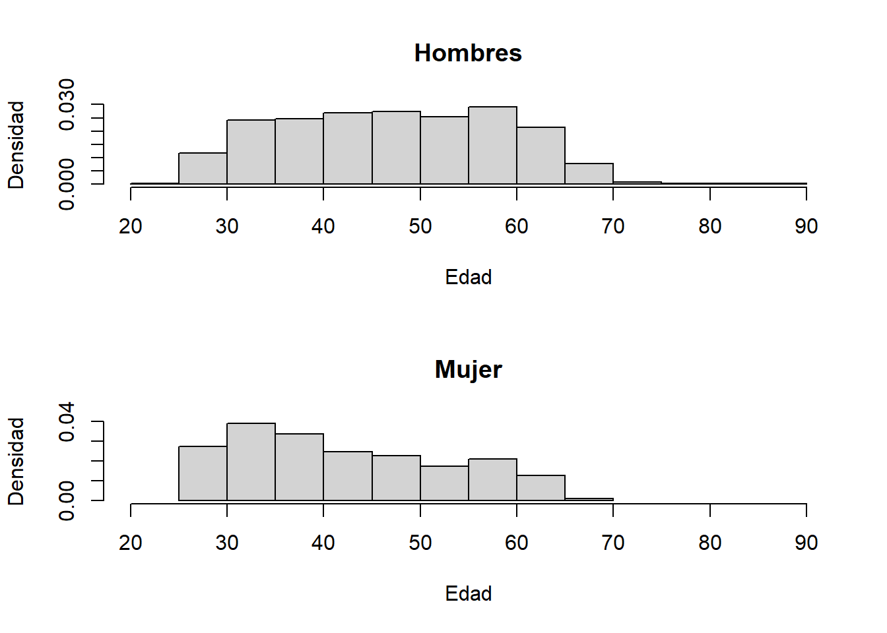
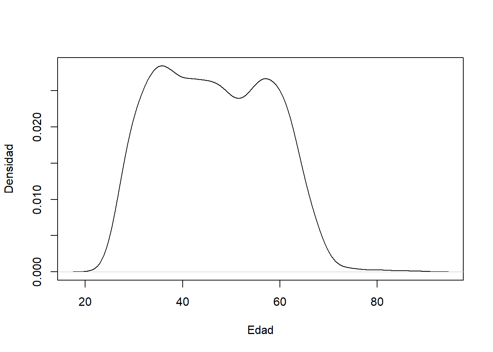
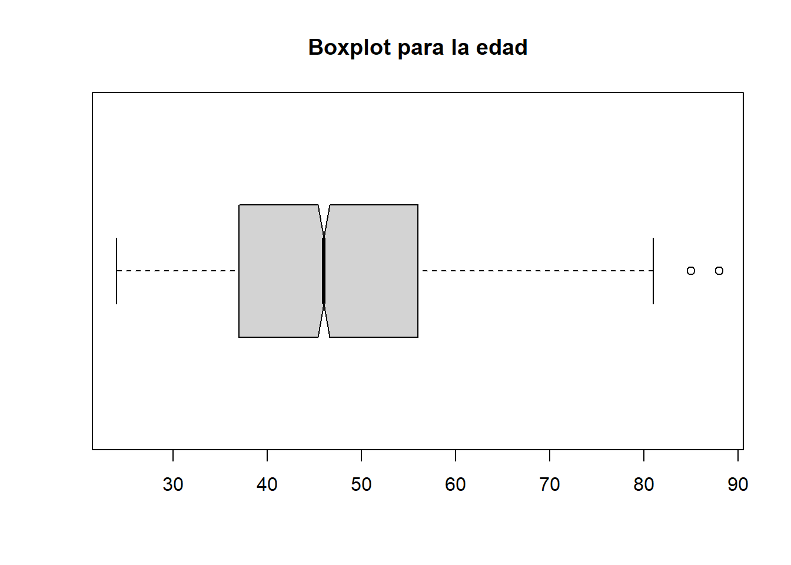

Capítulo 2 Análisis univariado
2.1 Variables cuantitativas
En esta sesión veremos la exploración de variables cuantitativas utilizando medidas de resumen y gráficos de caja.
Antes de comenzar, verificamos si tenemos instalados los paquetes necesarios. Para ello, copiamos el siguiente código en la consola y lo ejecutamos verificando que ningún error aparezca. El mensaje de error puede identificarse porque comienza con la palabra “Error.”
Es posible observar mensajes o advertencias (warnings) en rojo sin que sean errores.
library(haven)
library(DT)
library(skimr)2.1.1 Lectura de datos.
Utilizaremos el conjunto de datos de la encuesta nacional a médicos y enfermeros para obtener los datos para este análisis. Para ello, abrimos los datos con el siguiente código:
# Encuesta Nacional ENSUSALUD 2015 a medicos y enfermeros
enlace <- "http://portal.susalud.gob.pe/wp-content/uploads/archivo/base-de-datos/2015/CUESTIONARIO%2002%20-%20CAPITULOS.sav"
datos = haven::read_sav(enlace)Despues de ejecutar esto, notará que en la sección Enviroment aparece el objeto datos.
2.1.2 Exploración básica
En esta primera parte, realizamos una exploración inicial del dataset. Con el comando head observamos las primeras 6 filas para conocer inicialmente el dataset. Otra opcion dar click al dataset “datos” en la ventana de environment. Verá que aparece una nueva ventana con el dataset.
head(datos[,1:10]) # Observar los primeros 6 ## # A tibble: 6 x 10
## ID USUARIOID CCDD DEPARTAMENTO CCPP PROVINCIA CCDI DISTRITO cccp nombreCP
## <dbl> <chr> <chr> <chr> <chr> <chr> <chr> <chr> <chr> <chr>
## 1 1 EVAL3 01 AMAZONAS 01 CHACHAPOY~ 01 CHACHAP~ 0001 CHACHAP~
## 2 1 EVAL3 01 AMAZONAS 01 CHACHAPOY~ 01 CHACHAP~ 0001 CHACHAP~
## 3 1 EVAL3 01 AMAZONAS 01 CHACHAPOY~ 01 CHACHAP~ 0001 CHACHAP~
## 4 1 EVAL3 01 AMAZONAS 01 CHACHAPOY~ 01 CHACHAP~ 0001 CHACHAP~
## 5 1 EVAL3 01 AMAZONAS 01 CHACHAPOY~ 01 CHACHAP~ 0001 CHACHAP~
## 6 1 EVAL3 01 AMAZONAS 01 CHACHAPOY~ 01 CHACHAP~ 0001 CHACHAP~# View(datos)Utilizamos el siguiente código para observar la lista completa de preguntas utilizadas al recolectar estos datos.
etiquetas_todos <- sapply(datos, attr,"label")
DT::datatable(data.frame(etiquetas_todos))Puede observar que existe un buscador en esta tabla. Este buscador ayudará a buscar las variables que necesitemos.
Ahora, exploramos las variables de interés: profesión y edad.
Utilizamos la función attr con el argumento “label” para observar la variable C2P1 asociada a la profesión.
attr(datos$C2P1,"label")## [1] "¿CUÁL ES SU PROFESIÓN?"Los códigos y etiquetas de las posibles respuestas para esta variable los observamos a continuación.
attr(datos$C2P1,"labels")## Médico Enfermero/a
## 1 2attr(datos$C2P1,"label")## [1] "¿CUÁL ES SU PROFESIÓN?"De estos resultados, se observa que la profesión enfermero esta asociada al código 2 mientras que la profesión de médico al código 1.
Utilizamos esta información para filtrar los datos correspondientes a los médicos (código 1).
data_medicos = datos[datos$C2P1==1,]
dim(data_medicos)## [1] 2219 2702.1.3 Análisis univariado
En esta sección, veremos ejemplos del análisis univariado para la variables edad.
2.1.3.1 Medidas de resumen.
Las medidas de resumen me sirven para resumir la información de una variable.
Comenzaremos utilizando una tabla de frecuencias sin agrupar para observar todos los posibles valores de la edad.
table(data_medicos$C2P2EDAD)##
## 24 25 26 27 28 29 30 31 32 33 34 35 36 37 38 39 40 41 42 43 44 45 46 47 48 49 50
## 1 1 9 27 46 39 52 60 47 60 70 72 53 68 68 53 58 52 70 60 52 57 65 56 59 56 55
## 51 52 53 54 55 56 57 58 59 60 61 62 63 64 65 66 67 68 69 70 71 72 73 74 75 76 79
## 46 50 55 53 56 67 61 63 50 60 64 46 46 40 17 25 20 11 9 1 2 1 1 1 2 1 1
## 81 85 88
## 2 1 1Como la edad en años es una variable cuantitativa discreta con muchos valores, una tabla de frecuencias no ayuda a resumir la información. Es mejor resumir esta información con medidas de tendencia central, dispersión y asimetría.
2.1.3.1.1 Medidas de tendencia central.
# Media
mean(data_medicos$C2P2EDAD)## [1] 46.44795# Mediana
median(data_medicos$C2P2EDAD)## [1] 46Interpretación:
- La edad promedio de los médicos es 46.4479495 años, y su mediana 46 años. A partir de la mediana, podemos también decir lo siguiente: 50% de los médicos tienen hasta 46 años.
2.1.3.1.2 Medidas de posición.
# Cuantiles (Cuartiles)
quantile(data_medicos$C2P2EDAD,probs=c(0.25,0.75,0.1,0.9))## 25% 75% 10% 90%
## 37 56 31 62Interpretación:
- El 25% de los medicos más jóvenes tienen hasta 37 años.
- El 75% de los medicos más jóvenes tienen hasta 56 años.
- El 10% de los medicos más jóvenes tienen hasta 31 años.
- El 19% de los medicos más jóvenes tienen hasta 62 años.
2.1.3.1.3 Medidas de dispersión.
Rango
# Rango
rg <- range(data_medicos$C2P2EDAD)
rg## [1] 24 88rg[2] - rg[1]## [1] 64Interpretación:
- Las edades de los médicos están entre 24 y 88 años. Además, el rango de sus edades es de 64 años.
Rango intercuartílico.
# Vemos los cuartiles.
quantile(data_medicos$C2P2EDAD,probs=c(0.25,0.5,0.75))## 25% 50% 75%
## 37 46 56# calculo rápido del rango intercuartil
IQR(data_medicos$C2P2EDAD)## [1] 19Interpretación:
- El rango intercuartílico de las edades es de 19 años.
- El 50% de los médicos tienen entre 37 y 56 años.
Desviación estandard.
# Desviación estandard
sd(data_medicos$C2P2EDAD)## [1] 11.38578Interpretación:
+ La desviación estandard para la edad de los médicos es 11.39 años.Esto quiere decir que, en promedio, las edades se desvian 11.39 años con respecto a la media (46.45 años).
Coeficiente de variación.
# Coeficiente de variación
CV <- sd(data_medicos$C2P2EDAD)/mean(data_medicos$C2P2EDAD)
CV## [1] 0.2451299Interpretación:
- El coeficiente de variación es 0.25 (o 25%). Es decir, los datos de las edades tienen una desviación estandard de 25% de la media de las edades de los médicos.
Note que no utilizamos unidades para el coeficiente de variación. Este indicador es adimensional.
2.1.3.1.4 Medidas de asimetría.
# Asimetria
Fisher.asi = function(x) mean((x - mean(x))^3)/sd(x)^3
Pearson.asi = function(x) 3*(mean(x) - median(x))/sd(x)
Fisher.asi(data_medicos$C2P2EDAD)## [1] 0.143489Pearson.asi(data_medicos$C2P2EDAD)## [1] 0.1180287A partir de los coeficientes de asimetría concluímos que los datos de edades para los médicos tienen cola a la derecha. (A mayor coeficiente de asimetría se observará mayor dispersión hacia un lado de la distribución)
2.1.3.1.5 Utilitarios en R
2.1.3.1.5.1 Comando summary
El comando summary nos servirá para conocer medidas de resumen básicas para una variable.
# Resumen de la variable edad
summary(data_medicos$C2P2EDAD)## Min. 1st Qu. Median Mean 3rd Qu. Max.
## 24.00 37.00 46.00 46.45 56.00 88.00Podemos observar el minimo y máximo; el primer(1st Qu) y tercer cuartil(3rd Qu); y medidas de tendencia central: media y mediana.
2.1.3.1.5.2 Librería skimr
Podemos realizar un análisis univarido de manera rápida utilizando la librería skimr. Recuerde instalar previamente la librería escribiendo install.packages("skimr") en la consola si se utiliza por primera vez.
Con el comando skim observaremos algunas medidas de tendencia central, dispersión y posición. Estas nos darán una vista general de los datos.
Nota: Podría demorar en ejecutarse si el dataset tiene muchas variables (columnas).
Probar el siguiente comando en la consola:
library(skimr)
skimr::skim(datos[,1:20])2.1.3.1.6 Observaciones sobre la media y mediana.
La mediana minimiza la siguiente función:
\[ f_1(z) = \sum^{n}_{i=1}(|X_i - z|) \]$
Y la media, por otro lado, minimiza la siguiente función:
\[ f_2(z) = \sum^{n}_{i=1}((X_i - z)^2) \] Ambas funciones son sumatorias de las desviaciones con respecto a z. Por ello, ambas indican la suma de errores que hay con respecto al valor z.
Observamos gráficamente estas funciones:
- Función 1: Función minimizada con la mediana.
# Definimos la funcion1 en R:
funcion1 <- function(x) sum(abs(data_medicos$C2P2EDAD - x))
funcion1(1)## [1] 100849funcion1(2)## [1] 98630# Graficamos la función:
y <- seq(20,90,1)
fy <- apply(array(y),1,funcion1)
plot(y,fy,type="l",xlab="Edad",ylab="Función de pérdida")
# Añadimos el punto correspondiente a la mediana
points(x=median(data_medicos$C2P2EDAD),
y=funcion1(46),lwd=5,col=2)
- Función 2: Función minimizada con la media.
# Definición de la función
funcion2 <- function(x) sum((data_medicos$C2P2EDAD - x)^2)
funcion2(1)## [1] 4870913funcion2(2)## [1] 4671434# Gráfica
y <- seq(20,90,1)
fy <- apply(array(y),1,funcion2)
plot(y,fy,xlab="Edad",ylab="Función de pérdida",type="l")
# Punto correspondiente a la media:
points(x=mean(data_medicos$C2P2EDAD),
y=funcion2(mean(data_medicos$C2P2EDAD)),lwd=5,col=2)2.1.3.2 Gráficos
2.1.3.2.1 Histogramas
Básicos
Los histogramas se crean con la función “hist.”
histo1 <- hist(data_medicos$C2P2EDAD,
xlab = "Edad",
ylab = "Frencuencia",
main = "")Tablas de frecuencia agrupadas.
A partir del histograma, se puede crear la tabla de frecuencias agrupada. En el siguiente código, utilizamos la categorización de la variable edad del histograma para crear la tabla de frecuencias agrupadas.
library(summarytools)
cortes <- histo1$breaks # Obtiene los cortes para la variable a partir del histograma
variable_categorizada <- cut(data_medicos$C2P2EDAD, cortes) #Crea la variable categorizada
freq(variable_categorizada) # Muestra la tabla de frecuencias## Frequencies
## variable_categorizada
## Type: Factor
##
## Freq % Valid % Valid Cum. % Total % Total Cum.
## ------------- ------ --------- -------------- --------- --------------
## (20,25] 2 0.090 0.090 0.090 0.090
## (25,30] 173 7.796 7.886 7.796 7.886
## (30,35] 309 13.925 21.812 13.925 21.812
## (35,40] 300 13.520 35.331 13.520 35.331
## (40,45] 291 13.114 48.445 13.114 48.445
## (45,50] 291 13.114 61.559 13.114 61.559
## (50,55] 260 11.717 73.276 11.717 73.276
## (55,60] 301 13.565 86.841 13.565 86.841
## (60,65] 213 9.599 96.440 9.599 96.440
## (65,70] 66 2.974 99.414 2.974 99.414
## (70,75] 7 0.315 99.730 0.315 99.730
## (75,80] 2 0.090 99.820 0.090 99.820
## (80,85] 3 0.135 99.955 0.135 99.955
## (85,90] 1 0.045 100.000 0.045 100.000
## <NA> 0 0.000 100.000
## Total 2219 100.000 100.000 100.000 100.000Densidad aproximada.
En el hisgrama es posible observar, además de la frecuencia, la densidad en el eje y. La densidad es un indicador similar al de la proporción pero que viene multiplicado por la inversa de la amplitud del intervalo. En R, esta densidad es calculada automaticamente con el argumento prob=T cuando se crea el histograma.
# Graficamos la densidad
hist(data_medicos$C2P2EDAD,
xlab = "Edad",
ylab = "Densidad",
main = "",
prob = T)Otra forma de ver la densidad es guardando el histograma en el objeto hist.1 de la siguiente manera:
# Otra forma: guardando el histograma en el objeto hist.1
hist.1 = hist(data_medicos$C2P2EDAD,
xlab = "Edad",
ylab = "Densidad",
main = "",
prob = T)
hist.1## $breaks
## [1] 20 25 30 35 40 45 50 55 60 65 70 75 80 85 90
##
## $counts
## [1] 2 173 309 300 291 291 260 301 213 66 7 2 3 1
##
## $density
## [1] 1.802614e-04 1.559261e-02 2.785038e-02 2.703921e-02 2.622803e-02 2.622803e-02
## [7] 2.343398e-02 2.712934e-02 1.919784e-02 5.948626e-03 6.309148e-04 1.802614e-04
## [13] 2.703921e-04 9.013069e-05
##
## $mids
## [1] 22.5 27.5 32.5 37.5 42.5 47.5 52.5 57.5 62.5 67.5 72.5 77.5 82.5 87.5
##
## $xname
## [1] "data_medicos$C2P2EDAD"
##
## $equidist
## [1] TRUE
##
## attr(,"class")
## [1] "histogram"# Observemos el cálculo de la densidad para el primer intervalo.
f1 = (1/(25-20))*(2/2219)
f1## [1] 0.0001802614# Compararlo con lo obtenido con el histograma:
hist.1$density## [1] 1.802614e-04 1.559261e-02 2.785038e-02 2.703921e-02 2.622803e-02 2.622803e-02
## [7] 2.343398e-02 2.712934e-02 1.919784e-02 5.948626e-03 6.309148e-04 1.802614e-04
## [13] 2.703921e-04 9.013069e-052.1.3.2.1.1 Comparar grupos con histogramas:
Los histogramas podemos usarlos también para comparar dos grupos. En estos casos, debemos asegurarnos de que los ejes x e y tengan las misma escala en ambos gráficos. En el siguiente gráfico definimos la escala con el argumento xlim=c(20,90).
x1 <- par(mfrow=c(2,1)) # Crear un arreglo de gráficos.
hist(data_medicos$C2P2EDAD[data_medicos$C2P4==1],
xlab = "Edad",
ylab = "Densidad",main="Hombres",
xlim=c(20,90),
prob = T)
hist(data_medicos$C2P2EDAD[data_medicos$C2P4==2],
xlab = "Edad",
ylab = "Densidad",main="Mujer",
xlim=c(20,90),
prob = T)
2.1.3.2.2 Gráficos de densidad.
La aproximación de la función de densidad de una variable se realiza utilizando el comando “density.”
# Densidad
hist(data_medicos$C2P2EDAD,
xlab = "Edad",
ylab = "Densidad",main="",
prob = T)
lines(density(data_medicos$C2P2EDAD))Si deseamos utilizarla sin el histograma podemos utilizar lo siguiente:
# Densidad
plot((density(data_medicos$C2P2EDAD)),
xlab = "Edad",
ylab = "Densidad",
main="")
Es util para para realizar comparaciones entre dos grupos(Análisis bivariado).
plot(density(data_medicos$C2P2EDAD[data_medicos$C2P4==1]),
main = "",xlab="Edad",ylim=c(0,0.04))
lines(density(data_medicos$C2P2EDAD[data_medicos$C2P4==2]),
col=2)
legend(70,0.03,
legend=c("Hombre","Mujer"),
col=1:2,pch=15,bty = "n")2.1.3.2.3 Función de distribución.
La función de distribución acumulada tambien llamada simplemente funcion de distribución es una función teórica que nos permite calcular probabilidades acumuladas.
Podemos estimar una función de distribución acumulada empírica a partir de los datos de la muestra utilizando la función ecdf.
Esta función es una aproximación a la función de distribución de la población y nos permitirá calcular proporciones de casos acumulados.
# función de distribución empírica.
fun <- ecdf(data_medicos$C2P2EDAD)Por ejemplo, podemos aplicar esta función en distintos valores e interpretarlos.
fun(24) # proporción de médicos que tienen hasta 24 años: 0.04%## [1] 0.0004506534fun(40) # proporción de médicos que tienen hasta 40 años: 35.3%## [1] 0.3533123fun(30) # proporción de médicos que tienen hasta 30 años: 7.89%## [1] 0.07886435Interpretación:
- La proporción de médicos que tienen hasta 24 años es 0.04%
- La proporción de médicos que tienen hasta 40 años es 35.3%
- La proporción de médicos que tienen hasta 30 años es 7.89%
Con esta función es posible reponder a la siguiente pregunta: ¿Qué proporción de médicos tienen hasta 60 años? (Ejercicio)
La función que hemos creado, puede graficarse con el comando plot:
plot(fun,
xlab="Edad",
main="Función de distribución acumulada (empírica)")2.1.3.2.4 Gráficos de caja
En R, utilizaremos el comando “boxplot” para obtener un gráfico de cajas básico. Los gráficos de caja nos dan una vista de la distribución de una variable cuantitativa utilizando los cuartiles. Además, nos permiten identificar rapidamente la existencia de valores atípicos.
boxplot(data_medicos$C2P2EDAD)Ejercicio: ¿Qué medidas de resumen hemos utilizado para construir la caja y los bigotes?
A continuación, verificamos los límites superior e inferior utilizados en el gráfico de cajas para la edad:
# Limites inferior(Li) y superior(Ls)
Ls = quantile(data_medicos$C2P2EDAD,0.75) + 1.5*IQR(data_medicos$C2P2EDAD)
Ls## 75%
## 84.5Li = quantile(data_medicos$C2P2EDAD,0.25) - 1.5*IQR(data_medicos$C2P2EDAD)
Li## 25%
## 8.5Observe también, que los valores atípicos son identificados a partir del uso de los límites superior (Ls) e inferior (Li).
# Valore atípicos
data_medicos$C2P2EDAD[data_medicos$C2P2EDAD > Ls]## [1] 88 85Con algunas líneas de código adicionales podemos personalizar este gráfico.
2.1.3.2.4.1 Personzalización.
2.1.3.2.4.1.1 Añadir un título.
boxplot(data_medicos$C2P2EDAD,
main="Boxplot para la edad"
)2.1.3.2.4.1.2 Cambiar la orientación del gráfico.
boxplot(data_medicos$C2P2EDAD,
main="Boxplot para la edad",
horizontal=TRUE,
notch = TRUE
)
2.1.3.2.4.1.3 Cambiar el color de la caja.
# Gráfico de cajas de color celeste.
boxplot(data_medicos$C2P2EDAD,
main="Boxplot para la edad",
col="skyblue"
)
# Añade un punto que representa el promedio de los datos.
points(mean(data_medicos$C2P2EDAD),
col="red")2.1.3.2.4.2 Comparar grupos.
Podemos utilizar los gráficos de cajas para comparar la distribución de una variable entre diferentes grupos. (En ese caso, estaríamos realizando un análisis bivariado entre una variable cuantitativa y otra cualitativa)
boxplot(C2P2EDAD~C2P4,data_medicos,
main="Boxplot para las edades por sexo"
) Para interpretar el gráfico, utilizamos las siguiente preguntas:
- ¿Qué grupo posee mayor mediana? ¿y cuál grupo la menor mediana?
- ¿Cuál de los grupos tiene mayor dispersión?
- ¿Existen valores atípicos para cada uno de los grupos?
2.1.4 Ejercicio
- Realizar un análisis univariado para las edades de los enfermeros.
- Crear un gráfico de caja para la edades de los enfermeros. Comentar lo que se observa a partir del gráfico de caja.
- Calcular las medidas de resumen para las edades de los enfermeros e interpretarlas.
- Comparar las edades de los enfermeros por sexo con un gráfico.
- Utilizar los datos de los resultados positivos para Covid en Perú para analizar la variable edad de los contagiados. Utilizando medidas de resumen y gráficos e interpretelos.